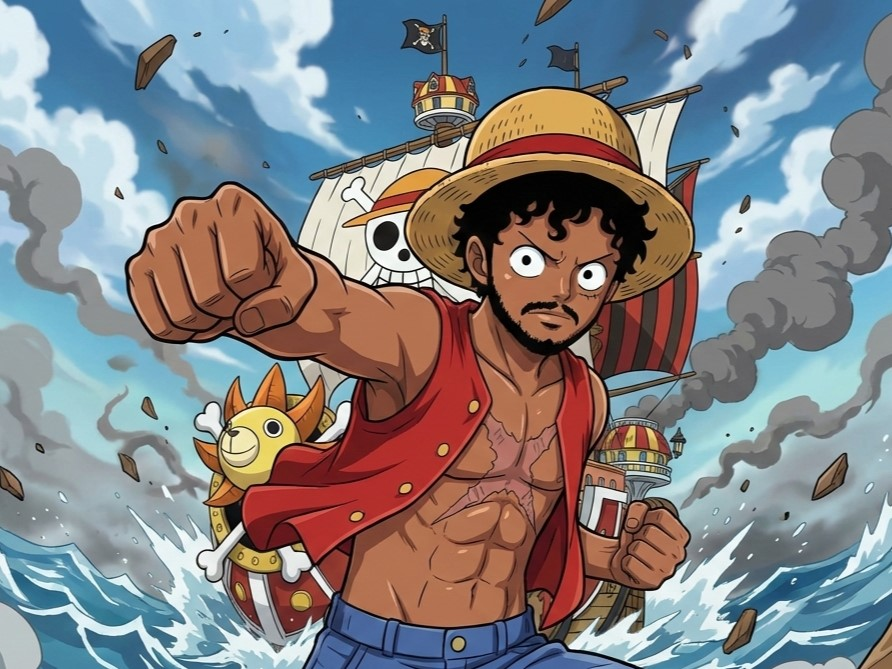

The portfolio of
Suriya · D · Palanivel
♪ BGM will play — you can mute anytime

Set Sail ↓
The story of a nakama on the Grand Line of Machine Learning
Results-oriented MLOps Engineer at Tata Consultancy Services with 4+ years of experience navigating the treacherous waters of Agile/Scrum. I specialize in charting secure, scalable ML pipelines on GCP using Kubeflow (KFP) and Vertex AI.
My voyage log includes automating CI/CD/CT workflows via Bitbucket Pipelines, enforcing cloud governance through IAM and Secret Manager, and optimizing cloud infrastructure for Machine Learning workloads. I also prototype Generative AI and LLM-based applications using HuggingFace and LangChain.
Islands conquered on the Grand Line
Tata Consultancy Services
Innovation Team – TCS
TCS
TCS
Devil Fruits consumed and Haki mastered on the Grand Line
Intangible infrastructure that flows like an element
Superhuman abilities that reshape reality
Willpower-driven mastery that transcends tools
Adaptive transformations for any battle
Where the foundations of power were forged
Jain (Deemed-to-be University)
K. Ramakrishnan College of Engineering
Buru buru buru… Kacha! Ready to connect, nakama?